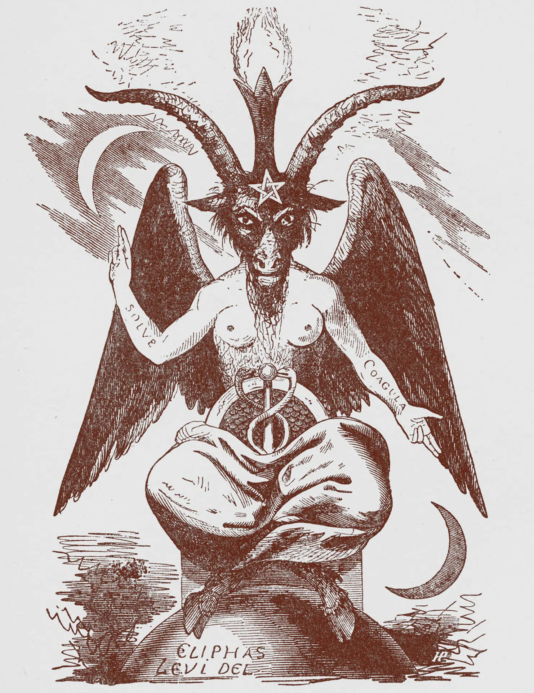

"Soy mi propio dios, libre de restricciones, guiado por la indulgencia y la afirmación de mi naturaleza auténtica."

Satanás
En nombre de Satanás, Señor de la Tierra, Rey del Mundo, Ordeno a las fuerzas de la oscuridad que me confieran su poder infernal. Abre las puertas del infierno y ven desde el abismo a saludarme como tu hermano (hermana) y amigo.
Concede a mí el favor de todo lo que deseo. Inflama mi voluntad con tu fuego. Guía mi camino con tu sabiduría. Y destruye a aquellos que se interponen en mi camino.
¡Salve, Satanás, Señor de la Tierra!

Satanás, fuente de mi fuerza y libertad, Despierta en mí la voluntad implacable,
Que mis deseos se manifiesten con claridad, Y mi camino esté iluminado por tu oscuridad.
Que los obstáculos se disipen ante mi poder, Y que aquellos que buscan detenerme sientan mi fuego.
En este mundo terrenal, reclamo mi derecho, Soy mi propio maestro, mi propia ley.
Guía mi mente con sabiduría y mi corazón con coraje, Para vivir sin temor, siempre en control de mi destino.
Salve, Satanás, en ti encuentro la verdad, Y en mí mismo, encuentro mi poder.

Oh, gran Satanás, señor del fuego interior, despierta en mí la fuerza y la voluntad. Que mi mente sea clara, mi espíritu indomable y mis deseos inquebrantables.
Guíame en el sendero del poder y el conocimiento, y concédeme la valentía para forjar mi propio destino.
Que así sea.

Oh, Lucifer, estrella del alba, guíame con tu luz en la oscuridad. Otórgame sabiduría, valentía y rebelión contra quienes buscan someter mi espíritu.
Te ofrezco mi lealtad y mi pasión, para caminar siempre con poder y determinación. Ave Satanás.